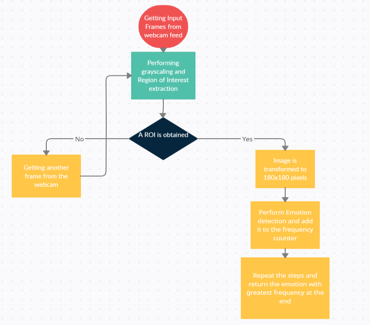
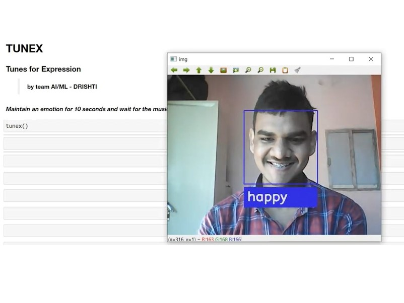

INTRODUCTION
Song is a way to express a certain mood and emotion, and as a listener we find it great if the
song we are listening echoes our emotion and hence lightens up our mood with enthusiasm, love,
compassion and pumps us up. Hence we worked to make a model TunEx (Tunes for Expressions) that
detects our emotions at real
time using a webcam feed and classifies one’s playlist into genres, and plays the song that best
matches the emotion based on the facial gesture.
Emotion Detection
For detecting the right emotion we decided to stick with the facial emotion detection. Major
reason for this was the fact that our face depicts our emotion and mood most effectively and the
detection can be performed without the need of any sophisticated hardware. Also, we will need to
provide the music suggestions for the devices that have a camera attached to them, hence it was
a rather easy task to get the input for our model at the later stage. The emotion after being
detected is mapped with the music genres, based on the kind of music a person will generally
like to listen to during a particular emotional outburst.
Emotions being Detected:
- Afraid
- Angry
- Disgust
- Happy
- Neutral
- Sad
- Surprised
Models used:
- Haarcascade
- Basic Convolutional Neural Networks (CNNs)
- XGB Classifier (for detecting genre of newly added song)
Workflow
- Camera feed is used to capture the face of the user, a 10 second video feed is taken.
- Region of Interest is Derived from the image using Haarcascade.
- The image is pre-processed further by cropping the original image as per the bounding
- The image is pre-processed further by cropping the original image as per the bounding boxes
obtained from Haarcascade, converting image to gray scale and resizing the image to 180x180
pixels to maintain integrity and uniformity of our model.
- Predictions are made on the image and the emotion with highest confidence from the entire
frames of 10 second is labelled as the emotion detected.
- According to the emotion detection, we map genres, and play the random selected songs from
these genres.
- At the end of the song we again capture a 10 second frame of web feed and later all the
above mentioned steps are repeated.

Result
- 65% test accuracy was obtained with a normal CNN model, as we classified the image to 7
emotions. To help deployment in real time we hence decided to take a webcam feed for 10
seconds.
- The genre classification was also tried, but excluded from web page on account Database
needs, and had an accuracy of 78% in classifying the genre of song, hence an unlabelled song
can also be used for out model.
